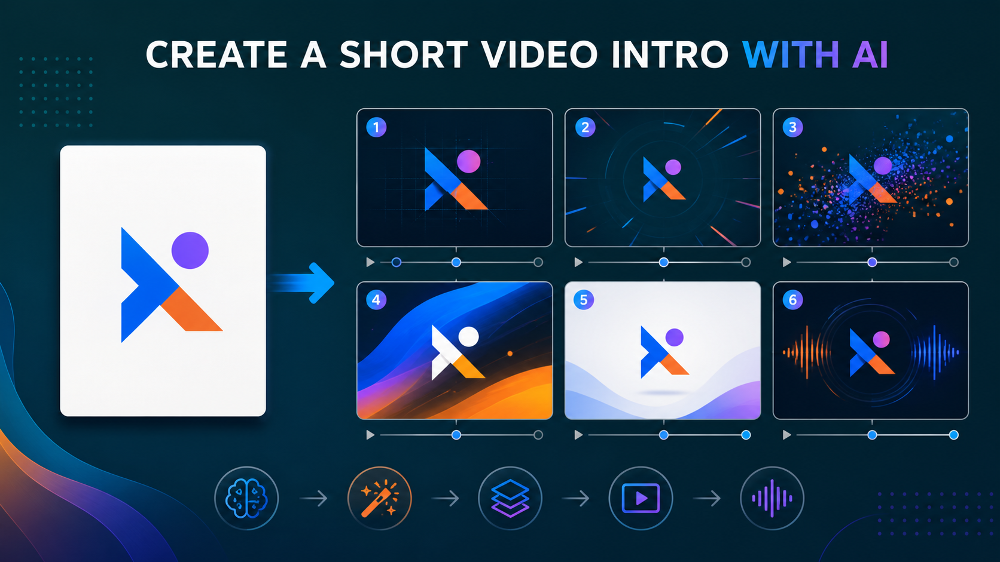

Промтзилла
Интро должно быть коротким и узнаваемым: 3-7 секунд обычно лучше, чем длинная заставка, которую зритель хочет промотать.

Пошаговая инструкция
- 1Подготовь логотип, название канала и описание тематики.
- 2Определи длительность интро: 3, 5 или 7 секунд.
- 3Опиши стиль: динамичный, минималистичный, технологичный, уютный.
- 4Попроси раскадровку и отдельный промт для генерации видео.
- 5Проверь, что логотип не искажается и финальный кадр читается.
Какой результат просить
Сначала проси раскадровку и движение, а уже потом отправляй финальный промт в видеогенератор. Под такую задачу удобно открыть интро для видео через нейросеть, дать исходник и сразу попросить структурированный результат.
Промт
RU
Придумай интро для видео. Тематика канала: [тематика] Логотип/название: [описание] Длительность: [3-7 секунд] Стиль: [минимализм / динамика / техно / уютный блог / другое] Сделай: — идею интро; — раскадровку по секундам; — движение камеры; — анимацию логотипа без искажения формы; — цветовую палитру; — звуковой акцент; — финальный промт для генерации видео. Интро должно быть коротким, не перегруженным и пригодным для повторного использования в каждом ролике.
EN
Create a video intro concept. Channel topic: [topic] Logo/name: [description] Duration: [3-7 seconds] Style: [minimal / dynamic / tech / cozy vlog / other] Create: — intro idea; — second-by-second storyboard; — camera movement; — logo animation without distorting the shape; — color palette; — sound accent; — final prompt for video generation. The intro must be short, clean, and reusable across episodes.
Важно
Если интро строится вокруг логотипа, загружай исходник в хорошем качестве и отдельно проси не менять форму знака.
Теги